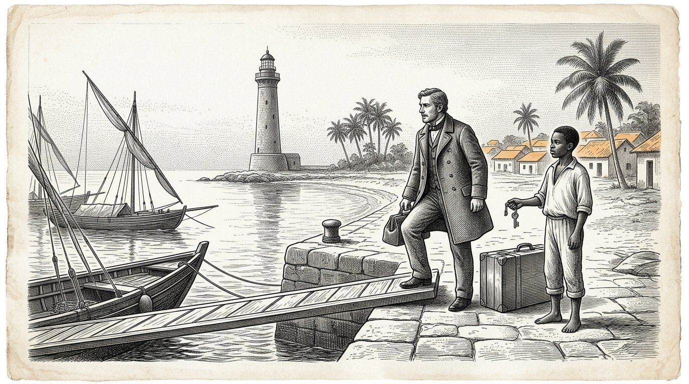
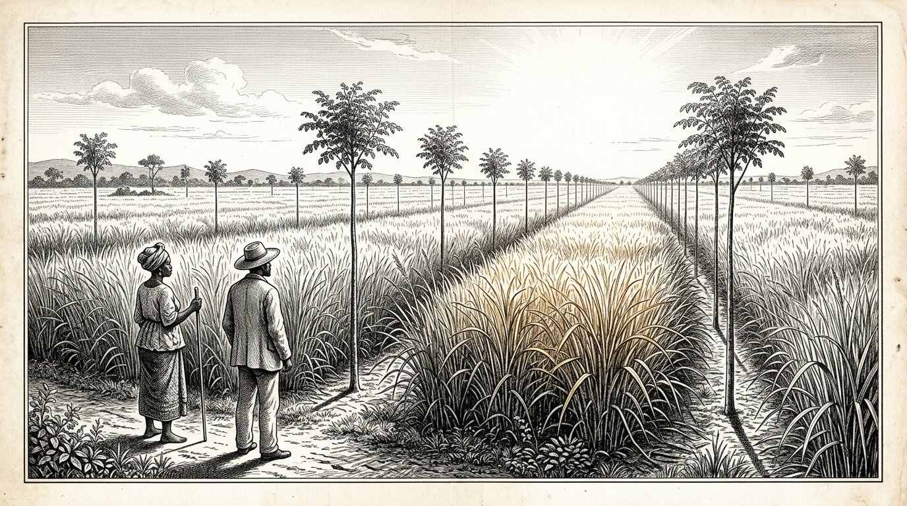
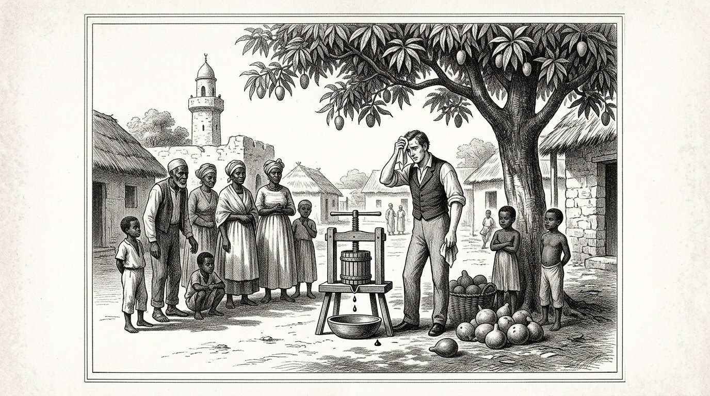
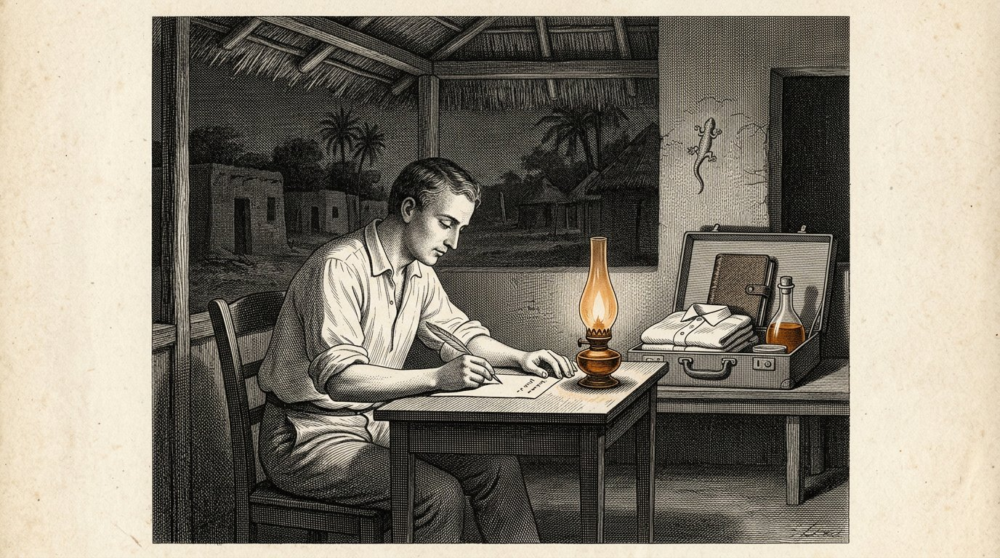
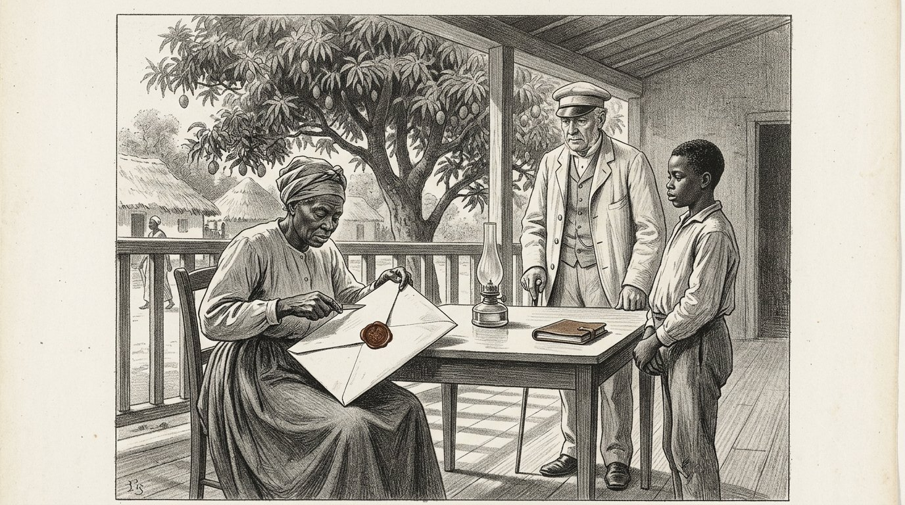
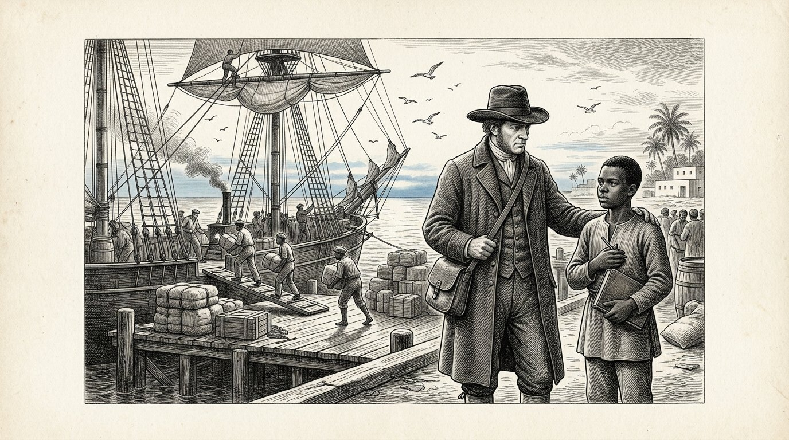

De Kosaris
BOEK VIJF
Het boek van de partner

De Kosaris
Het boek van de partner
De brief die vooruit ging
Proloog — gesproken door Kosus
Ik ben Kosus. Wanneer u dit vijfde boek opent, is er dertien jaar verstreken sinds mijn dood, en Petros heeft het schrift dat Alkion hem gaf inmiddels zo vaak in handen gehad dat de leren band eromheen zacht is geworden. Dit is niet meer mijn boek. Dit is Petros' boek. Ik spreek de proloog alleen omdat de gewoonte het vraagt en omdat ik één ding wil zeggen voordat u begint.
Boek Vier was over een vloeistof. Boek Vijf is over de verhouding tussen twee mensen die die vloeistof samen willen maken op een plek waar zij nog niet is gemaakt. Dat is een andere vraag. Wie een vloeistof maakt, heeft techniek nodig. Wie een verhouding bouwt, heeft de weegschaal van Timaris nodig. De eerste kan worden geleerd. De tweede kan worden verpest.
Petros vertrok uit het havendorp met een kist, een fles en het schrift. Voordat hij vertrok schreef hij een brief. De brief ging vooruit op het schip dat drie weken eerder uitvoer dan hij. Op de brief stond de naam Yara, en het adres van een dorp dat aan de evenaar ligt, waar Alkion en Demira jaren eerder waren geweest. In de brief stond: ik ben Petros, leerling van Kosus, opvolger van Alkion. Ik kom niet om te halen. Ik kom om te vragen of ik van u mag leren en om te tonen wat ik heb geleerd.
De brief kwam aan drie weken voor Petros. Yara las hem. Zij las hem twee keer. Toen legde zij hem in een la en zij zei niets tegen niemand. Wat er in de la ligt, komt in dit boek boven wanneer het uur er is.
Wie dit boek leest, leert niet hoe je een vloeistof exporteert. Wie dit boek leest, leert hoe je een systeem samen opbouwt zonder dat een van de twee partijen aan het einde denkt dat hij verloren heeft. Dat is een kleiner ding om te leren dan het lijkt. En het is een groter ding om te doen dan iedereen zegt.
Ik geef het woord aan Petros. Vanaf hier is hij het.
De Kosus zegt:een brief die vooruit gaat op de reiziger, is de eerste vezel van de weegschaal die tussen twee mensen wordt gehangen. Wie zonder brief aankomt, moet zich haasten. Wie de brief laat aankomen voor zichzelf, komt aan op zijn eigen tijd.
Door Jacobus van Merksteijn
Dit is Boek Vijf van de Kosaris. Het volgt Boek Vier, waarin de vloeistof uit het gras kwam en het dorp zichzelf warm hield in een winter zonder gas. Aan het einde van Boek Vier gaf Alkion het schrift van Kosus door aan Petros, en Anthea sloot het boek met de belofte dat de eerste leerling van Petros op zijn beurt Boek Zes zou schrijven.
Petros vaart daarom in dit boek. Hij gaat naar de evenaar, waar hij als jongere man al vier jaar had rondgereisd. Hij komt aan in een dorp waar Yara woont, die u kent uit Boek Eén Deel X als de vrouw met het rode kleed. Zij is niet dezelfde als toen — zij is ouder geworden, en de coöperatie die zij en haar oudsten hebben opgezet is uitgegroeid tot iets waar drie omliggende landen ogen op hebben gericht.
Ik heb dit boek geschreven na drie ontmoetingen met Petros in de afgelopen jaren en na het lezen van de brieven die hij aan Alkion en Anthea heeft geschreven. De brieven zelf zijn in het bezit van Anthea gebleven. Wat u leest is mijn samenvatting van wat hij mij heeft verteld en wat de brieven mij hebben laten begrijpen.
Ik noem één ding bij naam. Boek Vijf gaat niet over ontwikkelingshulp en niet over energie-export. Het gaat over wat het is om als noorderling in het zuiden aan te komen zonder de aannames van de vorige eeuw mee te brengen. Dat is moeilijker dan het lijkt. Petros weet dat en het boek toont wat er gebeurt wanneer hij het toch probeert. Hij faalt op sommige punten. Yara helpt hem terug op de rails. Op andere punten leert hij haar iets wat zij nog niet had. Dat is de weegschaal die dit boek weegt.
Wie dit boek leest en denkt dat het gaat over Afrika, leest niet goed. Het gaat over hoe twee mensen uit twee werelddelen leren om samen iets te bouwen dat geen van tweeën alleen had gekund. Dat is precies wat de vier zuilen bedoelen wanneer zij zijn opgeschreven.
Malta, augustus 2027.
Deel 1

Waarin Petros aan de evenaar aankomt, Yara hem ontvangt zonder haar hand uit te steken, en de eerste week wordt besteed aan luisteren in plaats van praten.

Petros stapte van de boot op een pier waar de zon om zeven uur in de ochtend al hoger stond dan zij in Malta op middernacht zou staan als zij daar had gestaan. Zijn kist stond naast hem. Zijn leren tas hing over zijn schouder. De fles hydrolysaat zat gewikkeld in zijn hemden op de bodem van de tas.
Er stond een jongen op de pier die zijn naam wist. De jongen zei: u bent Petros. Ik ben Baraka. Yara heeft mij gestuurd. Kom.
Petros zei: ik heb geen paard en geen kar. Baraka zei: dat is goed. Er is een auto. Petros zei: heeft u een auto? Baraka zei: het dorp heeft een auto. Vandaag mag ik hem rijden omdat ik u haal.
Zij liepen de pier af naar een oude Toyota die geel was en die met touw was vastgemaakt aan de plek waar het portier ontbrak. Baraka laadde de kist in de kofferbak. Hij zei: is deze zwaar? Petros zei: hij bevat een pers en een boek. De pers is niet groot maar hij is zwaar. Baraka zei: dan is hij zwaar.
Zij reden een uur landinwaarts. De weg was rood en hobbelig en Petros voelde de kist bij elke hobbel achter zich schuiven. Baraka reed langzaam en zonder haast. Hij zei: heeft u honger? Petros zei: nog niet. Baraka zei: dan mooi, want wij eten pas na aankomst.
Zij passeerden mangobomen en een kudde geiten en drie vrouwen met bundels op hun hoofd. Baraka groette hen zonder te stoppen. Petros zei: iedereen groet elkaar hier. Baraka zei: dat is niet iedereen. Dat zijn Fatou en Aminata en Mariam. Zij komen elke ochtend hier langs. Als iemand zou langsgaan die ik niet ken, zou ik hem niet groeten. Dat is anders.
Petros zei: ik denk dat ik veel te leren heb over wie hier wie is. Baraka zei: dat is niet moeilijk. U moet naar de namen luisteren. Wanneer iemand een naam heeft, weet u dat de anderen hem kennen. Wanneer iemand zonder naam voorbijkomt, weet u dat hij niet van hier is. Dat is alles.
Zij kwamen aan bij een dorp met een lange rij lage huizen en een grote mangoboom in het midden van een open plek. Onder de mangoboom zat een vrouw met een rood kleed op een stoel. Zij was ouder dan Petros zich Yara had voorgesteld. Zij stond op toen zij de auto zag. Zij liep naar de auto. Zij stak haar hand niet uit.
Zij zei: welkom, Petros, leerling van Kosus. Ga eerst zitten. Wij spreken vanavond. Vandaag luister je. Petros knikte. Hij zei: dank u, Yara. Hij ging op de bank onder de mangoboom zitten. Baraka bracht hem water. En Petros luisterde de hele middag naar de geluiden van het dorp zonder een woord te zeggen.
De Kosus zegt:wie in een vreemd land aankomt en de eerste dag spreekt, spreekt over zichzelf. Wie de eerste dag luistert, spreekt op de tweede dag over de anderen. Alleen wie over de anderen spreekt, wordt op de derde dag verstaan.

Yara kwam aan het einde van de middag terug. Zij zei: kom mee. Wij eten. Zij bracht Petros naar een lange houten tafel die was opgezet onder een dak van gedroogde bladeren. Er zaten al twaalf mensen aan tafel: Baraka, drie oudere mannen, vier vrouwen van Yara's leeftijd, en vier kinderen tussen zeven en dertien jaar.
Yara zei: dit is Petros. Hij komt van heel ver. Hij kent Alkion en Demira. Hij was tien jaar geleden hier, maar u kent hem waarschijnlijk niet meer omdat hij toen vier jaar door alle dorpen aan de kust is gereisd zonder ergens langer dan een maand te blijven.
De oudste van de mannen aan tafel zei: u heeft niet lang genoeg op één plek gebleven om ergens gekend te worden. Dat komt vaker voor bij noorderlingen. Petros zei: ik weet dat, en ik wil het deze keer anders doen. Ik wil hier blijven zolang het nodig is en niet korter.
Yara zei: hoeveel is nodig? Petros zei: dat weet ik niet. Dat leer ik van u. Yara zei: dat is een goed antwoord. Onthoud dat u het heeft gegeven. Wanneer u over drie maanden ongeduldig wordt, zal ik u eraan herinneren.
Zij aten. Het eten was rijst met kip en een groene saus die Petros niet kende. Hij vroeg wat het was. Een van de vrouwen zei: dat is Moringa. Petros zei: die ken ik. Wij persen haar samen met het gras. De vrouw zei: u perst haar? Petros zei: haar bladeren, samen met het Juncao. Dat maakt de vloeistof helder.
De vrouw zei: wij eten haar. Wij drogen haar en malen haar en doen haar in de saus. Wij persen haar niet. Petros zei: dat is misschien beter. Ik heb nooit bedacht dat men Moringa ook kon eten. Ik heb haar altijd als hulpstof gezien.
Yara zei: dat is het eerste wat u van ons leert. Wat u een hulpstof noemt, is voor ons een gewas. Wat u een gewas noemt, is voor ons een medicijn. Wanneer u met Moringa perst, verspilt u iets. Wanneer u haar eet, wordt u sterker. Als wij samengaan werken, moeten wij eerst afspreken wat wij eten en wat wij persen. Anders verpest u onze keuken en beledigt u zonder het te weten.
Petros knikte. Hij zei: dat noteer ik. Yara zei: schrijf het straks op. Nu eet. Zij aten. De sterren kwamen op boven het dak van bladeren. Petros voelde dat hij verder van huis was dan hij ooit was geweest, en tegelijkertijd voelde hij dat hij precies op de goede plek zat.
De Kosus zegt:wie in een vreemd land een hulpstof herkent die daar een gewas is, moet weten dat hij niet is aangekomen bij een leverancier. Hij is aangekomen bij een keuken. Beledig de keuken niet, of u eet nooit meer mee.

Op de tweede avond bracht Yara Petros naar haar huis. Het was een lang laag huis met een veranda. In de veranda stond een schrijftafel. Op de schrijftafel lag een la. In de la lagen papieren.
Yara opende de la. Zij haalde een brief eruit. Zij zei: dit heeft u drie weken voor uw aankomst geschreven. Ik heb hem twee keer gelezen. Ik heb hem in deze la gedaan. Ik heb niemand verteld dat ik hem had gekregen.
Petros zei: waarom niet? Yara zei: omdat ik wilde zien of u zou aankomen zoals de brief het beloofde. In de brief schreef u dat u niet kwam om te halen. U schreef dat u kwam om te vragen. Ik heb drie weken lang gekeken naar hoe u zou aankomen. Vandaag zag ik u aankomen. U kwam niet om te halen. U kwam om te vragen. Nu kan de brief uit de la.
Petros zei: en als ik anders was aangekomen? Yara zei: dan had de brief in de la moeten blijven. En ik had morgen tegen u gezegd dat u een dorp verderop welkom was, waar mijn zwager woont. Hij is beleefd en gastvrij en hij zou u drie weken hebben gehost zonder dat u iets bij ons had geleerd. Dan zou u zijn teruggegaan met verhalen en niet met kennis.
Petros zei: hoe wist u dat ik anders zou zijn? Yara zei: ik wist het niet. Ik hoopte het. Uw brief was anders geschreven dan de brieven die ik van andere noorderlingen krijg. Zij openen altijd met wat zij komen brengen. U opende met wat u kwam vragen. Dat was een goed teken. Maar tekens kunnen liegen. Daarom heeft de brief drie weken gewacht.
Petros vroeg: wat schreef u aan mij terug? Yara zei: niets. Ik antwoord niet op brieven van mensen die ik niet ken. Ik antwoord op mensen die aankomen. Dat is anders. Papier lieg makkelijk. Mensen liegen ook, maar aan hen kan ik zien wanneer.
Petros knikte. Hij zei: dan is de brief in de la nu een begin. Yara zei: nee, hij is een eind. Wat wij vanaf morgen doen, hoeft u niet meer op te schrijven. Wij spreken. Wij bouwen. En wanneer u naar huis gaat, schrijft u aan Alkion wat er is gebouwd, niet wat er is gezegd. Dat is de manier.
Petros vouwde de brief open. Hij zag zijn eigen handschrift van drie maanden geleden. Hij voelde iets vreemds: de brief was niet meer van hem. Hij was van Yara. Zij had drie weken lang die woorden gedragen zonder dat hij het wist. Nu gaf zij ze terug, niet als antwoord maar als een sleutel.
De Kosus zegt:een brief die u vooruitstuurt is niet meer van u zodra hij aankomt. Hij wordt gedragen door wie hem leest en wordt teruggegeven op het uur dat de lezer kiest. Wie schrijft, weet dat. Wie schrijft zonder dat te weten, schrijft alleen aan zichzelf.
Deel II
Deel 2

Waarin Petros ontdekt dat het gras hier al vijftien jaar wordt geteeld, dat de oudsten er meer van weten dan hij, en dat de pers die hij bij zich heeft de vraag oproept wat zij ontbrekend achterlaat.

Op de derde ochtend nam Yara Petros mee naar het veld achter het dorp. Het was manshoog Juncao, zover het oog reikte. Tussen elke rij Juncao stonden Moringa-bomen op ongeveer drie meter afstand van elkaar.
Petros bleef staan aan de rand van het veld. Hij zei: hoe lang staat dit hier? Yara zei: dit stuk vijftien jaar. Het stuk aan de andere kant van de rivier twaalf jaar. Het stuk bij het buurdorp negen jaar. Wij hebben in totaal ongeveer zeshonderd hectare in ons district.
Petros zei: wie heeft u dit geleerd? Yara zei: mijn moeder heeft mij het planten geleerd. Zij had het van een ingenieur uit China die hier in de jaren tachtig kwam werken en die haar het Juncao heeft gegeven. Toen was zij achttien en ik was drie. Ik heb de Moringa er tien jaar later tussen gezet, na een gesprek met een oude landbouwer die me vertelde dat Moringa de wortels beschermt.
Petros zei: dus wij hebben dit niet uitgevonden. Yara zei: nee. Uw Alkion heeft het niet uitgevonden. Uw Kosus heeft het niet uitgevonden. Ik heb het niet uitgevonden. Niemand heeft het uitgevonden. Het gras stond hier voordat wij ontdekten wat wij ermee konden.
Petros zei: en het persen? Yara zei: dat doen wij niet. Wij snijden het gras en wij voeren onze dieren ermee. Wij drogen de bladeren en wij branden ze in onze kachels. Wij eten de Moringa. Wij maken van de wortels van Juncao een medicijn tegen koorts. Wij persen niet omdat wij nog nooit een pers hebben gezien die klein genoeg was om hier onder de mangoboom te staan zonder een fabriek eromheen.
Petros zei: ik heb er een bij mij. In de kist. Yara zei: dat weet ik. Baraka heeft het gewicht gevoeld. Hij heeft mij verteld dat er iets zwaars in zit dat geen boek is en geen fles. Ik heb geraden. Ik wil de pers vanmiddag zien.
Petros zei: en als het werkt? Wat betekent het voor u? Yara zei: dat weet ik niet. Ik wil eerst kijken. Als het werkt, praten wij daarna. Als het niet werkt, hoefden wij niet te praten. Praten kost tijd en beloftes maken kost meer tijd. Wij doen het andersom.
Petros dacht na. Hij zei: dat is de omgekeerde volgorde van hoe ik het thuis heb geleerd. Yara zei: ik weet. Bij u wordt eerst een contract getekend en daarna gekeken of het werkt. Bij ons wordt eerst gekeken en daarna afgesproken. Beide kunnen. Wij doen het onze manier omdat wij wonen hier en u bent op bezoek.
De Kosus zegt:wie aankomt met een pers en denkt dat hij iets brengt, moet eerst leren dat het gewas al staat en de mensen al eten. De pers voegt iets toe dat er niet was. Zij vervangt niet iets dat er wel was. Wie dat verwart, verliest de mensen voordat hij de pers heeft opgezet.

Die middag zetten zij de pers op onder de mangoboom. Baraka droeg de onderdelen uit de kist. De oudsten en drie vrouwen en zeven kinderen stonden er in een halve kring omheen.
Petros liet zien hoe men snijdt. Baraka bracht een bundel Juncao van het veld en een handvol Moringa-bladeren. Petros toonde hoe men laagt: gras, blad, gras, blad. Hij draaide de schroef aan. Iedereen keek.
Er kwam niets. Petros draaide harder. Er kwam nog niets. Hij draaide zo hard hij kon. Er kwam een druppel. Toen twee. Toen niets meer.
Petros werd rood. Hij dacht: ik heb dit twintig keer gedaan in Malta en zesmaal in het havendorp. Waarom werkt het hier niet?
Yara zei niets. Zij keek naar het veld en toen naar de pers. Zij zei: hoe oud was het gras dat u thuis perste? Petros zei: drie maanden na de laatste snee. Yara zei: en dit? Zij wees naar de bundel op de pers. Petros zei: ik weet niet. Baraka?
Baraka zei: dit gras is negen maanden oud. Wij hebben dit veld sinds januari niet gemaaid omdat wij het lieten uitgroeien voor het zaad. Wij maaien pas volgende week.
Yara zei: dan is uw pers voor jonger gras dan wat hier vandaag stond. Wanneer wij volgende week maaien, dan proberen wij het opnieuw. Vandaag hebben wij geleerd dat uw pers preciezer is dan uw ontvangst hier is geregeld. Dat is niet uw schuld en niet die van ons.
Petros liet de pers los. Hij zei: dat had ik moeten vragen. Yara zei: ja. Wij hadden het ook kunnen zeggen. Wij hebben het niet gezegd omdat ik u wilde zien werken. Ik wilde weten of u zou toegeven als het misging. U heeft toegegeven. Dat was belangrijker dan of het werkte.
Petros zei: dat was een test. Yara zei: het was geen test. Het was hoe wij ontdekken wie u bent. Als u boos was geworden op de pers of op Baraka of op mij, hadden wij morgenochtend een auto voor u besteld naar de haven. U bent niet boos geworden. U bleef bij de fout. Dat is Aletheris. Wij zijn u dankbaar dat u het hebt getoond.
Een van de oudsten aan de rand zei: nu weten wij dat wij met u kunnen praten. Volgende week persen wij samen jong gras. Als er dan iets uitkomt, hebben wij iets om over te praten. Als er dan niets uitkomt, blijft u toch nog een maand. U kunt inmiddels tellen tot honderd in onze taal.
Petros lachte. Het was de eerste keer sinds hij was aangekomen. Hij zei: dat kan ik nog niet. Maar ik ga het leren.
De Kosus zegt:een demonstratie die mislukt in gezelschap van mensen die u nog niet kent, is de kortste weg naar wederzijdse eerlijkheid. Wie in een geslaagde demonstratie eerlijkheid probeert te tonen, komt niet verder dan indruk maken. Wie in een mislukte demonstratie zijn fout toegeeft, heeft de weegschaal gebalanceerd voordat er iets is verhandeld.

Een week later maaiden zij een deel van het aangrenzende veld. Het gras dat zij binnenbrachten was licht groen, zacht in de vezel, en het rook zoeter dan het oude gras van de week daarvoor.
Zij zetten opnieuw de pers op onder de mangoboom. Dezelfde halve kring stond eromheen, dezelfde kinderen, dezelfde oudsten. Baraka legde de laagjes.
Petros draaide de schroef aan. Deze keer kwam er na tien minuten een straaltje. Amber, helder, glinsterend. Hij liep in twintig minuten door tot een halve fles. Yara keek. Zij zei niets.
Aan het einde van het persen zei Petros: wilt u proeven? Yara zei: op wat? Petros zei: op de tong. Zij weigerde. Zij zei: ik proef pas op iets dat wij samen hebben gemaakt en van ons is. Dit is nog van u. Ik proef straks.
Petros zei: en de vlam? Yara zei: dat is voor de kinderen. Zij nam een klein aardewerk schaaltje en gaf het aan een meisje van acht dat naast haar stond. Zij zei: giet een lepel erin. Het meisje deed het. Yara nam een lucifer en gaf die aan het meisje. Zij zei: steek aan.
Het meisje stak aan. Er kwam een blauwe vlam met een goudgele kern. De kinderen stapten achteruit. Toen keken zij weer.
Yara zei: dit is wat u hebt gebracht. Dank u dat u het aan de kinderen heeft laten zien in plaats van aan mij. Petros zei: waarom is dat belangrijk? Yara zei: omdat de kinderen dit hun leven lang zullen onthouden en wij nog geen enkel besluit hebben genomen. Wanneer u de vlam eerst aan mij had laten zien, was ik degene geweest die iets moest beslissen. Nu zijn de kinderen zeven getuigen die u niets verschuldigd zijn maar zich alles herinneren. Dat is beter voor u en beter voor ons.
Petros knikte. Hij zei: dat had ik niet bedacht. Yara zei: dat weet ik. Ik wil u iets vragen. Hoeveel liter kunt u uit deze pers per dag halen? Petros rekende. Hij zei: tien liter als wij vier volwassenen laten helpen. Yara zei: en hoeveel gras kost dat? Petros zei: ongeveer tweehonderd kilo per dag. Yara zei: en die tweehonderd kilo, hoe komt die van het veld naar de pers? Petros wist het niet. Yara zei: dan is dat het volgende wat wij moeten uitzoeken. De pers zonder een keten die haar voedt, is een stuk hout. De pers met een keten is een systeem. Wij bouwen aan een systeem.
De Kosus zegt:een pers is een stuk hout. Een keten van mensen die de pers voeden en van haar leren, is een systeem. Wie een pers verkoopt, verkoopt hout. Wie een systeem opbouwt, deelt iets dat blijft na de dood van de eerste pers.
Deel III
Deel 3

Waarin Petros en Yara samen een tweede pers bouwen van lokaal hout, waarin de vrouwen leren wat er allemaal met de vloeistof kan, en waarin het dorp voor het eerst iets heeft dat een kern is en niet een keten.

Yara bracht Petros naar de timmerman van het dorp. Hij heette Abdoulaye. Hij was oud en zijn handen waren van dat soort dat niet meer trilt hoewel hij tachtig was.
Yara zei: Abdoulaye, wij willen nog een pers bouwen. Deze keer met ons eigen hout. Zodat wanneer Petros teruggaat naar het noorden, wij vier persen hebben en niet één die met hem meegaat.
Abdoulaye keek naar Petros' pers. Hij bevoelde het hout. Hij zei: dit is eik uit een koud land. Wij hebben geen eik. Wij hebben palissander en wij hebben mangohout. Petros zei: welke van de twee kunt u aanbevelen? Abdoulaye zei: palissander is sterker en het splijt niet. Mango is lichter maar het is minder duurzaam. Voor een pers die vijftien jaar moet meegaan is palissander beter.
Petros zei: kunt u de pers namaken met palissander? Abdoulaye zei: ik kan hem namaken. Ik kan hem beter maken. Uw pers heeft een schroef die vast zit in een enkelvoudig moer. Ik zou een tweede moer erop zetten omdat één van de twee slijt. Uw pers heeft geen inklembeugels aan de zijkant. Ik zou die erbij zetten omdat het gras dan gelijkmatig ingeklemd is. Uw pers heeft geen goot onderaan. Ik zou een houten goot leggen die de vloeistof leidt naar de fles zonder dat zij druppelt. Uw pers verliest zo één liter per dag. Dat is drie procent. Voor vijftien jaar is dat vier maanden productie.
Petros luisterde. Hij zei: dat is wat ik van u wil leren. Kunt u mij helpen om die verbeteringen aan mijn pers ook toe te voegen zodat ik ze thuis kan invoeren? Abdoulaye zei: ja. Wij bouwen twee persen samen. Ik leer u de mijne en ik leer u waar de uwe kan worden verbeterd. U leert mij wat de vloeistof zelf is. Als wij dat drie weken doen, hebben wij vier persen: mijn twee nieuwe, uw verbeterde, en de kennis in vier hoofden.
Yara zei: en ik betaal u wat u vraagt uit de gezamenlijke kas. Abdoulaye zei: van u vraag ik niets. U bent mijn zuster. Van Petros vraag ik dat hij Baraka en Aminata leert om de vloeistof te maken en op te slaan, en dat hij aan het einde van drie weken zonder pers naar huis vertrekt en zijn pers hier laat. Petros keek naar Abdoulaye. Hij keek naar Yara. Hij zei: dat is een goede prijs.
Yara knikte. Zij zei: nu bouwen wij een systeem.
De Kosus zegt:een ambachtsman die de fouten van uw pers benoemt zonder u te beledigen, is de ambachtsman die u zoekt. Vind hem. Betaal hem in kennis en niet alleen in munt. Kennis houdt hem aan uw zijde. Munt maakt hem alleen tot uw leverancier.

Terwijl Abdoulaye en Petros aan de persen werkten, kwamen op de vierde dag drie vrouwen naar Yara. Zij heetten Aminata, Fatou en Aissatou. Zij droegen elk een klein blikje met kool.
Aminata zei: Yara, wij horen dat de vloeistof brandt zonder rook. Wij willen weten of zij ook kan koken. Onze kolen worden duur en het hout dat wij verzamelen kost ons twee uur per dag lopen. Als de vloeistof kan koken, sparen wij tijd. Yara riep Petros erbij. Zij zei: kunt u dit beantwoorden?
Petros zei: zij kan koken. Wij hebben er in ons dorp thuis een klein branderfornuis van gemaakt dat een halve liter per dag verbrandt en dat een gezin drie maaltijden kookt. Aminata zei: en de brander? Petros zei: die heeft Wilm, onze smid, ontworpen. Ik heb geen brander bij mij. Ik heb wel de tekeningen.
Fatou zei: wij hebben een smid. Hij heet Ibrahim. Kan hij het namaken? Petros zei: laat mij hem morgenochtend spreken. Als hij de tekeningen kan lezen, dan ja.
De volgende ochtend gingen Petros en Yara en de drie vrouwen naar Ibrahim. Hij was jonger dan Petros had verwacht, ongeveer dertig. Hij bekeek de tekeningen. Hij zei: dit lijkt op een lamp die ik ken. Ik kan hem maken. Voor deze dorpsvrouwen? Aminata zei: voor ons drieën eerst. Als het werkt, voor de rest.
Ibrahim zei: geef mij drie weken en drie kilo koper. Aminata zei: het koper hebben wij. Wij smelten oude leidingen uit een oude Franse missiepost die niet meer wordt gebruikt.
Petros keek naar Yara. Yara zei: ziet u het? Petros zei: ja. Ik zie het. Yara zei: wat ziet u? Petros zei: ik zie dat u een systeem heeft dat werkt zonder mij. De brander wordt gemaakt door Ibrahim. Het koper komt van de missiepost. De vraag komt van de drie vrouwen. De vloeistof kom ik brengen. Alleen dat laatste zit in mij. Als u dat leert maken, ben ik niet meer nodig.
Yara zei: dat is precies wat wij aan het doen zijn. En dat is niet erg voor u. U kunt dan naar de volgende plek gaan zonder dat wij van u afhankelijk zijn. Wanneer u aan iemand gebonden bent die u nodig heeft, kunt u nooit gaan. Wanneer u iemand hebt vrijgemaakt van u, wordt u zelf ook vrij.
Petros zweeg lang. Toen zei hij: dat is precies wat Kosus mij ook heeft geleerd. Ik hoor het nu voor de tweede keer, uit een andere mond, en het klopt beter dan de eerste keer.
De Kosus zegt:wanneer u iemand vrijmaakt van uzelf, wordt u zelf ook vrij. Wanneer u iemand aan uzelf bindt, verliest u de vrijheid om nog ergens anders heen te gaan. De kortste weg naar uw eigen vrijheid loopt via de vrijheid van wie u helpt.

Aan het einde van zijn eerste maand schreef Petros voor het eerst een brief aan Alkion. Hij schreef bij het licht van een lamp die op zijn eigen vloeistof brandde. Hij schreef op papier dat Yara hem had gegeven. De brief was kort.
Alkion, ik ben één maand hier. Ik heb tot dusver niets nieuws geleerd over hydrolysaat. Ik heb wel drie dingen geleerd over hoe je met mensen werkt die het al twintig jaar langer weten dan jij en die je niet nodig hebben. Ik som ze op.
Ten eerste. Kom niet aan met een oplossing. Kom aan met een pers en een schrift en een fles. Laat de mensen kijken. Laat hen vragen stellen. Antwoord alleen op wat gevraagd wordt en niet op wat u had willen vertellen.
Ten tweede. Doe uw eerste demonstratie niet perfect. Wanneer zij mislukt en u geeft de fout toe, hebt u sneller vertrouwen dan wanneer u iets perfects toont waarvan zij niet kunnen inschatten hoe u dat heeft gedaan. Perfectie wekt achterdocht in het zuiden.
Ten derde. Bouw ondertussen aan iets dat zonder u werkt. Elk apparaat dat u meebrengt, moet lokaal namaakbaar zijn. Elke kennis die u brengt, moet lokaal gedragen worden. Op de dag dat u vertrekt, moet alles wat er staat, zonder u blijven staan.
Ik ontdek elke week dat Yara mij drie stappen voor is. Ik dacht dat ik hier iets kwam brengen. Ik ontdek dat ik hier iets kom leren. Ik denk dat Kosus dat vanaf het begin heeft geweten en dat hij het aan mij en Alkion aan u en Anthea aan wie dan ook nooit expliciet heeft opgeschreven omdat hij wist dat wij het zelf moesten ontdekken.
Ik blijf voorlopig hier. Baraka gaat Boek Zes schrijven, denk ik, maar dat wil ik hem nog niet vertellen omdat hij twaalf is en het teveel gewicht zou zijn. Ik wacht tot hij zestien is. Dan geef ik hem het schrift.
Groet Demira en Anthea. Zeg Anthea dat ik haar Boek Vier heb meegenomen en dat Yara de proloog heeft gelezen en heeft gezegd: die man wist wat hij deed. Dat is de hoogste lof die uit haar mond kan komen.
Uw leerling, Petros.
Hij vouwde de brief. Hij deed hem in een envelop. De volgende ochtend gaf hij hem aan een handelaar die naar de haven ging en die beloofde de brief op een boot naar Europa te leggen. Zes weken later kwam de brief bij Alkion aan. Zij las hem. Zij glimlachte. Zij zei tegen Demira: hij is aangekomen. En hij is bij zichzelf aangekomen tegelijkertijd. Dat is de beste soort aankomst die iemand kan doen.
De Kosus zegt:een brief die van ver komt en die eerlijk is, verandert de lezer meer dan honderd gesprekken met wie dichtbij is. Wie een leerling ver van huis heeft, moet zijn brieven bewaren. Zij vertellen samen wat de leerling in tien jaar leert. Zonder de brieven verliezen wij die tien jaar.
Deel IV
Deel 4

Waarin een ambtenaar uit de hoofdstad hoort van de coöperatie en langskomt met beleefde vragen die niet beleefd zijn, en waarin Yara Petros toont hoe men zulke mannen ontvangt zonder aan hen te geven wat zij komen halen.

In de tweede maand van Petros' verblijf kwam er op een middag een grijze jeep het dorp inrijden. Uit de jeep stapte een man in een lichtgekleurd pak. Hij was zorgvuldig gekleed en zijn schoenen waren opvallend schoon voor iemand die net over een rode zandweg was gereden.
Hij vroeg naar Yara. Baraka wees hem naar de mangoboom. De man liep erheen. Yara zat op haar stoel. Zij stond niet op. Zij zei: welkom. Ga zitten.
De man ging zitten. Hij stelde zich voor als Monsieur Diallo, adviseur van het ministerie van industrie in de hoofdstad. Hij zei: mevrouw Yara, wij horen goede berichten over uw coöperatie. Wij zouden graag zien of wij van dienst kunnen zijn.
Yara zei: van welke dienst? Diallo zei: wij hebben een programma om lokale initiatieven op te schalen. Wanneer een coöperatie een bepaalde omvang bereikt, komt zij in aanmerking voor een partnerschap met een van onze internationale investeerders. Wij kunnen u helpen om die stap te zetten.
Yara zei: wij hebben die stap niet gepland. Diallo zei: dat begrijp ik. Maar de kans is nu open. Er is een groep uit Dubai die interesse heeft in biobrandstoffen en die bereid is om substantieel te investeren.
Yara zei: en zij zouden willen? Diallo zei: een meerderheidsaandeel. In ruil voor kapitaal en marktopening. U zou blijven meewerken als lokaal partner.
Yara zei: wij hebben geen meerderheidsaandeel te geven. Wij zijn geen bedrijf. Wij zijn een dorp dat samen iets doet. Er is niets om aan iemand te geven.
Diallo glimlachte beleefd. Hij zei: mevrouw, dat kunnen wij regelen. Wij kunnen u helpen om een juridische entiteit op te richten die dit mogelijk maakt. Dat is een klein administratief werk.
Yara zei: en wanneer de entiteit is opgericht en het meerderheidsaandeel is verkocht, wat gebeurt er dan met het dorp? Diallo zei: het dorp blijft. U krijgt inkomsten. U krijgt technische assistentie. U wordt onderdeel van een groter geheel.
Yara zei: en de beslissingen? Diallo zei: die worden genomen door de eigenaars, zoals in elke onderneming. Maar u heeft altijd inspraak.
Yara zweeg een lange tijd. Toen zei zij: ik heb dertig jaar besluiten genomen over dit veld en dit gras. Vraag mijn moeder, die vijftien jaar voor mij besluiten heeft genomen. Zij besliste over de plek waar de rijen komen. Ik besliste over de Moringa ertussen. Mijn dochter zal beslissen over wat er ná dertig jaar Moringa komt. Als ik u onze meerderheid geef, geeft mijn dochter iemand anders haar besluit.
Diallo zei: dat is niet het geval, mevrouw. Yara zei: dat is precies het geval. Ik weet hoe deze contracten werken. Mijn buurdorp heeft er een getekend voor katoen. Nu telen zij wat de eigenaars zeggen dat zij moeten telen. Zij zijn niet armer, maar zij zijn geen dorp meer. Zij zijn een fabriek zonder muren.
Diallo bleef beleefd. Hij zei: dat is een keuze, mevrouw. Ik respecteer haar. Ik wilde u alleen de mogelijkheid noemen.
Yara zei: dank u dat u haar heeft genoemd. Nu weet ik dat zij bestaat en dat u haar aan andere dorpen ook noemt. Ik zal met de andere oudsten van onze streek spreken. Wij zullen samen weten wat te doen wanneer u ergens anders langskomt.
Diallo begreep dat het gesprek was afgelopen. Hij stond op. Hij zei: mevrouw, mag ik uw gastvrijheid nog vragen om vanavond hier te overnachten? De weg terug is lang. Yara zei: dat mag u. Baraka wijst u het gastenverblijf.
Diallo liep weg. Petros, die de hele tijd in de schaduw op de grond had gezeten en niets had gezegd, keek Yara aan. Yara zei: waarom bent u stil gebleven? Petros zei: omdat u dit veel beter deed dan ik het zou hebben gedaan.
De Kosus zegt:een man in een schoon pak die vraagt naar uw meerderheid, komt niet voor uw welzijn. Hij komt voor uw handtekening. Wie beleefd blijft en het gesprek in zijn eigen tempo houdt, laat hem gaan zonder handtekening en zonder vijand. Wie boos wordt, wint niets en verliest de beleefdheid van zijn dorp.

Drie weken na het bezoek van Diallo kwam er een brief uit de hoofdstad. Hij was op officieel briefpapier, in een rode envelop. Yara opende hem in de veranda, met Petros en Baraka als getuigen.
De brief was van een directeur van het ministerie van landbouw. Hij schreef: mevrouw Yara, wij zijn geïnformeerd dat er in uw dorp ongeregistreerde industriële activiteiten plaatsvinden. Wij verzoeken u binnen dertig dagen op ons kantoor te verschijnen om uw activiteiten te registreren en de vereiste vergunningen aan te vragen.
Petros zei: het is dezelfde brief die ik in Brussel heb gekregen. Yara zei: nee. Het is een andere brief. Zij is scherper. In Brussel wilden zij u testen. Hier willen zij u vermorzelen. Diallo heeft gerapporteerd dat wij niet meewerken. Nu proberen zij het via een andere deur.
Petros zei: wat gaat u doen? Yara zei: wat gedaan moet worden. Ik ga naar de hoofdstad, maar niet alleen. Ik neem drie oudsten mee, en ik neem u niet mee. U bent noorderling en uw aanwezigheid zou hen argumenten geven die zij anders niet hebben.
Petros zei: welke argumenten? Yara zei: dat wij een buitenlandse operator hebben. Dat u aan het profiteren bent van onze arbeid. Dat u ons uitbuit. Zij zouden dat allemaal kunnen zeggen, en drie kranten in de hoofdstad zouden het overnemen. Wanneer ik ga zonder u, hebben zij niets om over te schrijven.
Petros zei: en wat zegt u tegen hen? Yara zei: dat wij een lokaal gebruik hebben. Dat het gras hier al vijftien jaar staat. Dat het persen een dorpsactiviteit is die geen industrie is en die geen vergunning nodig heeft. Als zij aandringen, zeggen wij dat wij bereid zijn de vergunning aan te vragen die past bij een dorpsactiviteit. Wij vragen om de kleinste vergunning die bestaat. Zij hopen ons in de grootste te dwingen. Wij ontwijken door in de kleinste vrijwillig plaats te nemen.
Petros dacht na. Hij zei: dat is precies wat wij ook in Brussel hebben gedaan. Wij vroegen om niet-gekeurd te worden en wij accepteerden dat wij niet mochten opschalen. Wij bleven daardoor onder de radar.
Yara zei: dat is een goede oefening geweest voor u. Ik denk dat het hier ook zal werken. Er is één verschil. In Brussel is de doornenhaag oud en zij groeit langzaam. Hier is de doornenhaag jong en zij is scherper. Zij is aangeplant door mensen die weten dat zij het geld nog niet allemaal hebben. Zij bijten dieper.
Petros zei: waarom moet ik dan niet mee? Yara zei: omdat wanneer zij dieper bijten, ik door hun schouders heen wil praten met de vergaderaars die achter hen zitten en met het volk dat achter die vergaderaars zit. Zo'n gesprek voer ik in mijn eigen taal, met mijn eigen mensen. Uw aanwezigheid zou mij daar tegenhouden.
Petros knikte. Hij zei: begrepen. Ik blijf hier en ik ga verder met Abdoulaye aan de tweede pers. Yara zei: ja. En wanneer ik terugkom, hebben wij een pers meer en een probleem minder. Dat is de goede volgorde.
De Kosus zegt:een aanval van een grote macht wordt niet weerstaan door een grotere macht. Zij wordt weerstaan door te vragen om in de kleinste categorie te worden geplaatst en die te aanvaarden. De aanvaller wilde u in de grootste categorie hebben omdat daar zijn haken zitten. In de kleinste zijn geen haken. Zij zijn daar niet nodig.

Yara was tien dagen weg. Petros werkte met Abdoulaye. Zij hadden de tweede pers klaar toen zij terugkwam. Zij zag hem staan in de veranda toen zij uit de jeep stapte. Zij glimlachte. Zij zei: hij is mooier dan die van u.
Petros zei: Abdoulaye's leerling heeft de zijmoeren gedaan. Yara zei: dan is hij mooi omdat drie mensen aan hem hebben gebouwd. Kom mee, ik heb u iets te vertellen.
Zij zaten aan de tafel. Yara zei: zij hebben ons een vergunning gegeven als 'dorpscoöperatie voor traditionele plantaardige verwerking'. Dat is de kleinste categorie die zij hebben. Er zijn er tweehonderdveertig van in het land. Zij hebben ons vermeld op nummer honderdvijfentachtig. Wij zijn niet meer bijzonder.
Petros zei: dat is de beste categorie. Yara zei: dat is de beste categorie. En ik heb iets anders meegebracht. Zij haalde een stuk papier uit haar mand. Zij zei: dit is een lijst met vier andere dorpscoöperaties die iets doen met plantaardige verwerking. Ik heb hen ontmoet in de wachtruimte van het ministerie. Wij hebben tijdens het wachten met elkaar gepraat. Zij hebben allemaal hetzelfde probleem als wij: zij worden bezocht door mannen in schone pakken en zij krijgen brieven in rode enveloppen.
Petros zei: en? Yara zei: en wij hebben afgesproken om over drie maanden bij elkaar te komen. In een dorp aan de rivier, waar een van hen woont. Wij nemen elk twee oudsten mee. Wij spreken over wat wij doen en over wat hen wordt aangeboden. Wij besluiten samen wat wij doen wanneer de volgende brief komt.
Petros zei: dat is een netwerk. Yara zei: het is de begin van een netwerk. Netwerken worden niet in vergaderzalen gebouwd. Zij worden in wachtkamers gebouwd. Wij hadden geen wachtkamer als de brief niet was gekomen. Nu hebben wij een wachtkamer en een lijst.
Petros zei: dat is de doornenhaag omgelopen door de aanvaller zelf te gebruiken. Yara zei: dat is precies wat het is. Wanneer u genoodzaakt wordt om naar een plek te gaan waar u niet wilde zijn, kijk dan wie er nog meer moet zijn. Uw medemensen zijn daar. Zonder de brief had u hen nooit ontmoet. De brief was uw uitnodiging aan uw eigen kant.
Petros zei: dat noteer ik. Yara zei: nee, dat doe ik zelf. In het schrift dat ik nu ook bijhoud. Ik heb er twee weken geleden een aangelegd. Uw komst heeft mij daartoe aangezet. Ik heb er nu twaalf bladzijden in geschreven.
Petros keek verrast op. Yara zei: wat had u gedacht? Dat alleen noorderlingen schriften bijhouden? Dat is een misverstand. Wij schrijven ook. Wij schrijven alleen niet voor uitgevers. Wij schrijven voor onze kleindochters. Dat is een langere horizon.
De Kosus zegt:wie in een wachtkamer wordt gezet, wordt geacht te wachten. Wie in een wachtkamer luistert, ontdekt zijn medemensen. De aanvaller die u samenbrengt in een wachtkamer, heeft u niet aangevallen. Hij heeft u een netwerk gegeven. Bedank hem in stilte en gebruik het.
Deel V
Deel 5

Waarin Baraka volwassen wordt, Petros na drie jaar het schrift aan hem doorgeeft, Yara zowel afscheid neemt als niet loslaat, en Boek Vijf sluit met een zesde boek dat elders zal beginnen.

Baraka werd op een dinsdag in december zestien. Zijn moeder maakte rijst met kip en groene saus. Yara gaf hem een nieuw hemd. Petros gaf hem het schrift van Kosus. Hij zei: dit is niet een verjaardagsgeschenk. Dit is een verantwoordelijkheid. Denk drie dagen na voordat u het aanneemt.
Baraka nam het schrift niet aan. Hij zei: ik denk drie dagen na. Op de vierde dag kwam hij naar Petros. Hij zei: ik neem het aan. Petros zei: waarom? Baraka zei: omdat er in deze streek niemand anders is die het zal aannemen. Als ik nee zeg, gaat het terug naar u en dan reist het met u mee naar de volgende plek. Ik wil dat wat u en Yara hebben opgebouwd hier blijft. Dus ik neem het aan.
Petros zei: dat is een goede reden. Baraka zei: er is nog een reden. Ik heb u drie jaar aan het werk gezien. Ik heb Yara mijn hele leven aan het werk gezien. Wanneer u weggaat, moet iemand doorgeven aan Yara wat u haar heeft geleerd, en aan mij en aan de kinderen na mij, wat Yara u heeft geleerd. Dat is een taak die van beide kanten komt. Ik ben van beide kanten. Ik ben van hier en ik heb u leren kennen. Dus ik ben de juiste.
Petros gaf hem het schrift. Baraka nam het aan met beide handen. Hij zei: mag ik erin schrijven? Petros zei: u moet erin schrijven. Anders is het geen levend schrift meer.
Yara stond ernaast. Zij zei tegen Baraka: en u schrijft niet alleen op wat gebeurt. U schrijft ook op wat gedacht wordt terwijl het gebeurt. Anders is het chronologie en geen wijsheid. Chronologie kunnen ambtenaren maken. Wijsheid moet u toevoegen. Dat is uw werk.
Baraka knikte. Hij zei: ik zal het proberen. Ik zal fouten maken. Petros zei: dat is wat Kosus tegen mij zei toen hij mij dit voor het eerst liet zien. Hij zei: u zult fouten maken, en dat is goed. Fouten die worden opgeschreven worden geen fouten meer. Zij worden lessen voor wie na u komt. Alleen de niet-opgeschreven fouten blijven fouten.
Baraka bracht het schrift naar zijn huis. Zijn moeder zag hem binnenkomen met het schrift onder zijn arm. Zij vroeg wat het was. Baraka zei: het is een boek van Kosus. Zijn moeder zei: wie is Kosus? Baraka zei: hij is een oude man uit een land ver weg. Hij is dood. Maar zijn schrift is bij ons aangekomen. Zij zei: en waarom hebt u het? Baraka zei: omdat Petros mij het heeft gegeven en Yara ermee heeft ingestemd. Zij zei: dan is het goed. Leg het op de plank naast mijn koran. Baraka zei: mag dat? Zij zei: waarom zou het niet mogen? Kosus is een leraar en de koran is een leraar. Leraren staan naast elkaar.
De Kosus zegt:een leerling die zestien wordt en het schrift aanneemt, sluit een keten van generaties. Het is nooit dezelfde keten als de vorige. Elke leerling verandert de keten door zijn eigen fouten en eigen wijsheid. Dat is niet een verzwakking. Dat is wat de keten levend houdt.

In de maand na Baraka's verjaardag begon Petros zijn dingen in te pakken. Niet zijn pers — die bleef bij Abdoulaye's tweede pers en Ibrahim's brander en Aminata's kookvuur. Alleen zijn kleren, zijn eigen schrift dat hij drie jaar had bijgehouden, en de eerste fles die hij in het dorp had geperst en die hij als aandenken bewaarde.
Op de avond voor zijn vertrek zat hij met Yara onder de mangoboom. Zij zei: wanneer komt u terug? Petros zei: ik weet het niet. Yara zei: dat is het juiste antwoord. Ik zou u niet vertrouwen als u een datum noemde.
Zij zwegen een tijd. Petros zei: ik heb iets te vragen. Yara zei: vraag. Petros zei: heeft u iets van mij nodig? Iets dat ik u kan sturen wanneer ik thuis ben? Yara zei: nee. Wij hebben niets van u nodig. Wij hebben alles wat wij nodig hebben. Dat is niet omdat u niets waardevol heeft. Het is omdat u ons al drie jaar iets waardevols heeft gegeven: uw tijd en uw eerlijkheid. Dat is genoeg.
Petros zei: en wanneer u iets nodig heeft in de toekomst? Yara zei: dan schrijf ik u. Als wij u nodig hebben, weten wij u te vinden. Wanneer wij u niet nodig hebben, laten wij u met rust. Dat is het respect dat u ons heeft geleerd door drie jaar geen dingen te vragen die u niet nodig had.
Petros zei: en Baraka? Yara zei: Baraka gaat u schrijven. Één brief per jaar. Op zijn verjaardag. Zo weet u dat het schrift leeft en dat hij erin schrijft. Als er een jaar geen brief komt, is er iets aan de hand en komt u terug om te kijken wat.
Petros knikte. Hij zei: dat is een goede afspraak. Yara zei: ik heb er nog een. Wanneer u naar de volgende plek gaat om hetzelfde te doen wat u hier heeft gedaan, dan wil ik dat u aan de mensen daar drie namen noemt. Aminata, Ibrahim en Abdoulaye. Zeg tegen hen: ik heb dit niet uitgevonden. Ik heb het geleerd van deze drie. Als u ooit twijfelt of wat wij samen doen echt is, kunt u hen bezoeken en aan hen vragen of het echt is.
Petros zei: dan zeg ik ook Yara. Yara zei: nee. Zeg hen alleen. Ik ben te ver. Zij zijn dichterbij. Zij zullen worden bezocht en u zult versterkt zijn wanneer die bezoeken worden gemeld. Ik ben een naam die groter wordt door haar afwezigheid. Zij zijn namen die groter worden door hun aanwezigheid. Kies de aanwezigen.
Petros zei: dat is de laatste les van u. Yara zei: dat is niet de laatste. Ik zal u nog dingen leren, maar u zult het pas begrijpen wanneer u ze zelf tegenkomt. Dat is hoe het werkt. Wat ik u nu zou uitleggen, gaat niet zitten. Wat u zelf ontdekt, blijft.
Zij stonden op. Zij omhelsden elkaar niet, want Yara omhelsde niemand. Zij drukte haar rechterhand tegen zijn borst en zei: ga goed. Petros drukte zijn rechterhand tegen haar borst en zei: leef lang. Dat was hun afscheid.
De Kosus zegt:een afscheid dat geen afscheid is, is een afscheid tussen mensen die weten dat zij elkaar niet nodig hebben en toch elkaar zullen missen. Dat is de beste soort afscheid. Wie missen kan wat hij niet nodig heeft, heeft geleerd wat vriendschap is.

Petros stond op de kade van de haven waar hij drie jaar eerder was aangekomen. Baraka had hem naar de haven gereden in dezelfde gele Toyota, met dezelfde ontbrekende deur, met dezelfde langzame stijl van rijden.
Baraka zei: wat schrijft u in uw brieven? Petros zei: ik schrijf aan Alkion dat u het schrift heeft aangenomen. Ik schrijf aan Anthea dat ik denk dat u Boek Zes zult schrijven. Ik schrijf aan Demira dat ik meer heb geleerd dan ik heb gegeven en dat ik daar dankbaar voor ben.
Baraka zei: mag ik u iets vragen? Petros zei: vraag. Baraka zei: wanneer ik Boek Zes schrijf, welke naam moet erop staan? De uwe of de mijne? Petros zei: de uwe. Boek Zes is niet meer van mij. Het is van u. Zoals Boek Vijf niet van Yara was maar van mij. Zoals Boek Vier niet van Alkion was maar van Anthea die het optekende. Elke schrijver schrijft voor de volgende schrijver, niet voor zichzelf.
Baraka zei: en waar moet ik het schrijven? Hier of ergens anders? Petros zei: dat is uw beslissing. Ik heb Malta gehad, ik heb het havendorp gehad, ik heb dit dorp gehad. U heeft dit dorp en de vier andere dorpen die Yara aan uw lijst heeft toegevoegd. Kies zelf welk deel van uw wereld u tot dorp maakt. En reis wanneer u moet reizen en blijf wanneer u moet blijven.
Baraka zei: hoe weet ik welke van de twee? Petros zei: dat weet u niet. U kiest een van de twee en u leert daaruit wat het andere is. Dat is de enige manier. Wie eerst wil weten en dan pas kiezen, kiest nooit.
De boot floot voor vertrek. Petros omhelsde Baraka. Hij zei: schrijf mij één keer per jaar. Wij zullen samen twee schriften vullen. Het uwe hier en het mijne thuis. Zij zijn twee helften van hetzelfde gesprek.
Petros stapte aan boord. Baraka bleef op de kade staan. De boot voer weg. Petros stond bij de reling en keek naar de kade tot Baraka een stipje was en toen tot de kade een lijn was en toen tot de kust een blauwe streep was en toen tot er niets meer was dan zee en lucht.
In zijn tas zat één fles. Zij was leeg. Hij had haar aan Yara willen geven en Yara had haar teruggegeven met de opdracht: bewaar deze fles en wanneer u aan een volgende plek aankomt, laat haar leeg zien. Zeg tegen degenen die u ontvangen: dit is de fles waarin ik de eerste vloeistof heb gedragen die ik heb geperst. Zij is leeg omdat wij haar hebben verbrand en gedronken en verwerkt tot iets dat blijft. Wat u ontvangt van mij is niet de fles maar de reis van de fles. Dat is genoeg.
Petros keek naar de horizon. Hij dacht: ik ga naar het noorden. Ik weet nog niet naar welk noorden. Maar ik heb een lege fles en een leeg schrift en drie namen om te noemen. Dat is meer dan waarmee ik ben aangekomen.
En hij dacht: ergens in dit continent, in een dorp dat ik nog niet ken, zit Baraka nu zijn eerste bladzijde te schrijven. Hij weet niet dat dat Boek Zes is. Dat komt later. Nu is het gewoon een bladzijde. Precies zoals Kosus zijn eerste bladzijde ooit is begonnen. Precies zoals ik de mijne heb geschreven en Alkion de hare en Anthea de hare. De keten schuift een schakel op. En de zee onder mij is dezelfde die Kosus veertig jaar geleden ook heeft overgestoken toen hij Malta bereikte. Dat is genoeg om mee te leven. Dat is genoeg om mee te vertrekken.
De Kosus zegt:een lege fles die u draagt van uw eerste plek naar uw volgende, is meer waard dan een volle fles. Volle flessen worden gedronken. Lege flessen worden getoond. Wat u toont blijft langer dan wat u schenkt. En de reis van de lege fles is het bewijs dat er iets is verbrand en gedronken en verwerkt tot iets dat blijft.
De Kosaris — Boek Vijf — Het boek van de partner.
Opgetekend door Jacobus van Merksteijn, ingenieur en uitgever, wonende op Malta en te Palma, naar gesprekken met Petros en op grond van de brieven bewaard door Anthea van Merksteijn. Uitgegeven onder openvizier.org. Illustraties in zwart-witte lithografie met blauwe accenten, in de huisstijl van Het Open Vizier.
"Wie een systeem opbouwt in plaats van een keten aan te leggen, bouwt aan iets dat na hem staat. Wie een keten aanlegt, heeft alleen zichzelf bevoorraad."